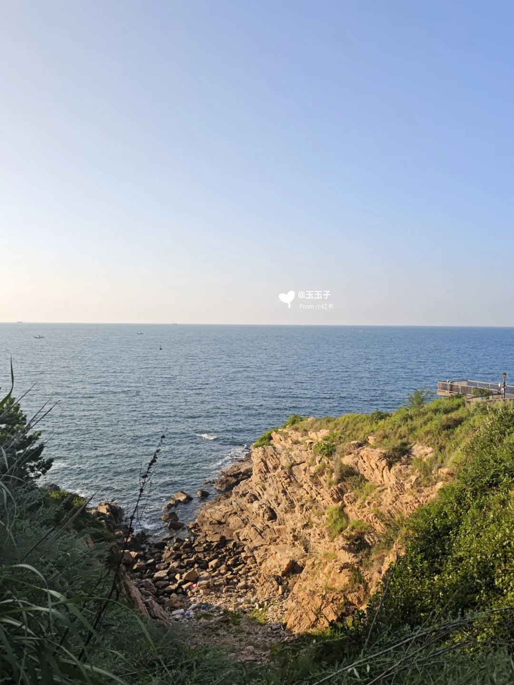
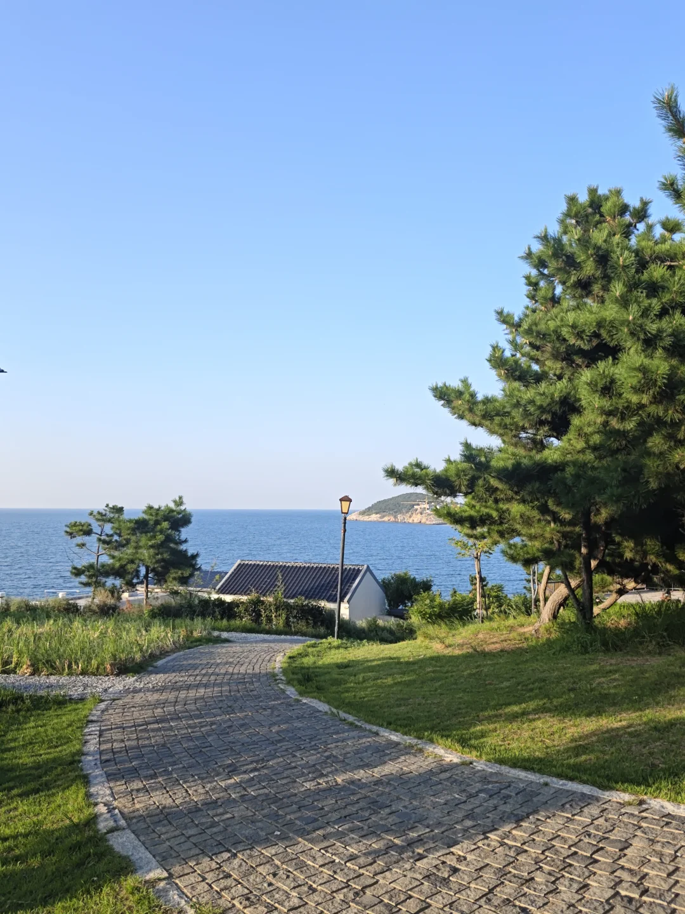
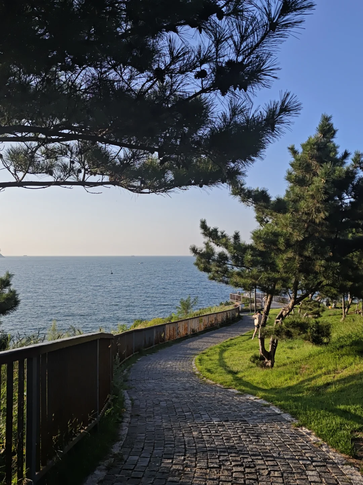

下一件事
10 月 1 日 · 去程航班 Y87589
威海时间 --:--:-- · --
--天
--小时
--分钟
--秒
上海出发 · 两人 · 3 晚 4 天。以已出票的去程航班和返程动车为锚点，把逐时行程、路线导航、住宿待办、天气预案与自然风光装进一页。
下一件确定事项是去程航班；旅行开始后会自动切换到下一个关键节点。
按真实经纬度投影到同一比例地图。先看全域，判断市区、机场、威海站与荣成东线的距离；再切到市区放大查看酒店和各景点。虚线只表示游览顺序，不代表实际驾车道路。
以已出票交通时间为硬边界。每个地点可打开介绍与导航；“打卡”状态保存在当前浏览器。
酒店12:00前退房且房费不含早餐。先在威高商圈吃早餐，再收拾并寄存行李，只带随身小包轻装散步。
用 60–90 分钟看城市海岸、灯塔与幸福门，不排队、不坐船；若下雨或前三天已疲惫，直接在酒店周边休息。
在酒店或幸福门片区选无需久等的一家，12:15 前结束；不跨区追店，不点耗时复杂做法。
检查证件、充电设备和车票；13:30–13:45 叫车前往威海站。
预留进站、安检和找站台时间；随身准备水和动车上的晚餐补给。
全程约 7 小时 20 分，预计 22:33 抵达上海虹桥。
不做网红店集邮。按每天景点所在片区聚合，重点推荐只保留路线顺、评论支撑较多的店；国庆营业时间、排队与当日海鲜仍需现场确认。
适合落地寄存后短程打车去吃，或半月湾回程吃晚餐。你点海肠捞饭，同行人从鲜活海鲜里选一道，再加海三鲜锅贴或鲅鱼丸子汤；它已不在新酒店步行圈，不为排队专程折返。
查看小红书：九禧海鲜居值不值得打卡 ↗酒店出发后向北去海源公园的市区方向，安排午餐不会把路线拉到城南。30多年老店，优先点炖牛排、冷面、海鲜葱饼；适合不想第一顿就吃纯海鲜时选择。
查看小红书原文与本地评论 ↗从酒店短程打车可达，兼顾海肠捞饭和海鲜，适合D1没吃到九禧时补位；也可留给D4回城后的提前晚餐。先电话问营业与排队，避免两个行程日都重复吃。
查看小红书：海肠捞饭Top 3对比 ↗就在国际海水浴场片区，店名与菜单同时覆盖鲅鱼水饺、海肠捞饭和蒸汽海鲜，最契合两个人的偏好。建议放在小石岛日落之后，或根据当天光线提前吃；海肠当天若已售罄就别硬等。
查看小红书：北方饺子王实测 ↗把正餐放在布鲁威斯之后、那香海游览前后。优先香海花街/景区餐饮区的家常海鲜、海鲜面，按停车、等位和当天食材决定，比追某一家“网红第一名”更稳。
查看小红书：那香海吃饭真心话 ↗都是那香海餐饮片区的临场候选，用“停车方便、近期评价正常、等位短”作为排序，不需要提前认定唯一答案。同行人可选蒸海鲜或家常海鲜，你在D3不必强行再吃海肠。
查看小红书：那香海口碑小店合集 ↗房费不含早餐，优先在十二属相街或威高商圈选能立即入座的早点；退房取行李时顺便准备水、水果或便携晚餐，避免七个多小时车程只靠站内临时购买。
幸福门散步后短程打车可达，海肠捞饭和海鲜能同时照顾两个人。10:45–11:00 到店更稳，若等位超过 20 分钟立即换酒店附近方案，12:15 前结束。
查看小红书：威海地道老饭店 ↗新酒店就在市中心商圈，D4只选能立即落座、快速出餐的一家。复杂海鲜做法直接放弃，吃完步行回酒店取行李，不再绕去竹岛片区。
若散步、排队或市区路况压缩时间，放弃最后一顿打卡，在威高广场简单吃或到站后买补给。当天目标是 14:15 前抵达威海站，不能为某一家店承担误车风险。
只保留旅行需要的信息，不展示姓名、证件号与订单号。
三晚固定住同一家，不搬酒店。门店名称在不同平台略有差异，导航时以地址为准。
平台别名：凯里亚德酒店（威海幸福门威高广场店）
唯一核对地址：山东省威海市环翠区环翠楼街道公园路8号
电话：0631-5220788-0 / 18669389807
入住：10月1日14:00后 退房：10月4日12:00前
房型：高级双床房 · 18–20㎡ · 有窗 · 禁烟 · 不含早餐
价格：3晚合计约 ¥1,599.65
退改：订单截图仅确认“订单确认前免费取消”，后续以当前订单页为准
停车：公共停车位有限，公开页面参考 ¥2/小时；租车前向酒店复核国庆住客政策
综合 9 月近期实测、国庆攻略和反向避坑笔记。热度不等于值得停留的时间。
多篇实拍都提到人少、松林步道、岩岸与豁然开朗的海面。比大相框、火炬八街更符合你的自然取向。
公共岸线、步道和秋草有氛围，但“粉色沙滩”评价两极，有游客反馈需在旁边咖啡店消费才能进入，不值得专程付费。
国庆人群与商业摄影占位会显著消耗体验。若仍想看，只放在 07:00 前的 20 分钟备选，不作为行程锚点。
小红书实测的市区骑行环线约 40–50km、早 7 点到晚 8 点。国庆车流大，这里拆成宽松模块，建议打车/包车，不建议整日骑电驴。
威海很吃阳光、能见度和风速。出发前 72 小时按下面逻辑交换 Day 2 / Day 3，不必执着日期。
能见度好时去成山头、布鲁威斯、那香海；预报有晚霞时，提前 60–90 分钟到小石岛。
猫头山、海源公园、喂海公园仍可看浪和岩岸；刘公岛、海上项目以当日公告为准。
博物馆/韩乐坊为主，雨停后就近去威海公园或海源公园；不要为沉船带着降雨专程跑荣成。
风光完整，满足“不只拍一张照”的停留价值。
晴天、能见度高时加分很多；灰天或大风时可调换。
沉船可快速拍照；其他点在国庆的拥挤、体力或商业化成本偏高。
保留三张游记实拍是为了判断地貌和氛围，不把高饱和“网红照”当作天气承诺。



把近期实测、高赞灵感和负面体验放在一起交叉。点卡片可看原帖。